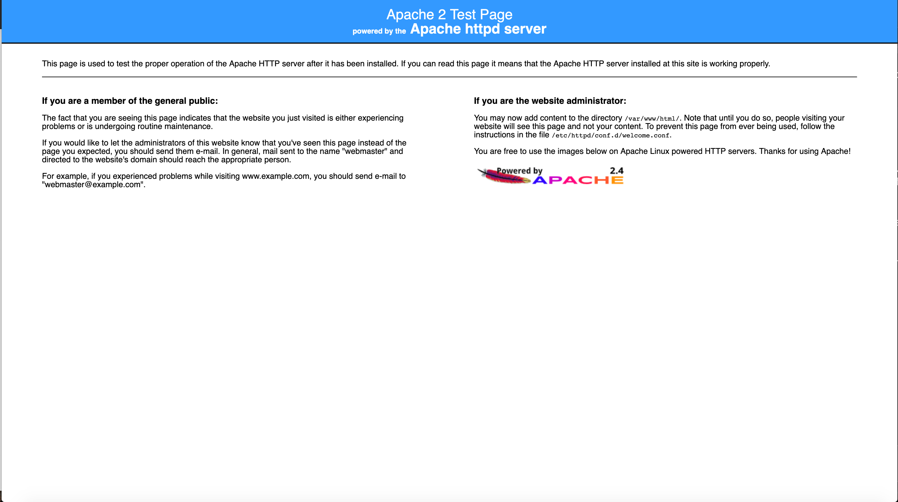
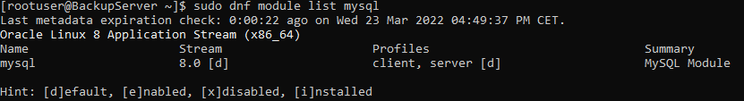
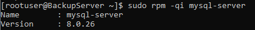
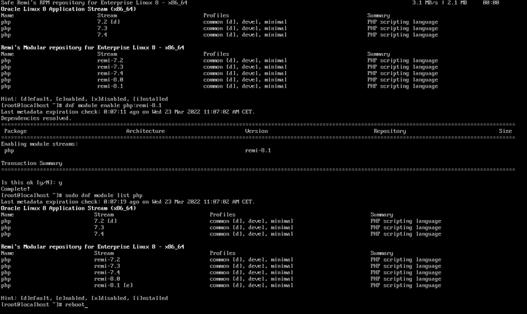
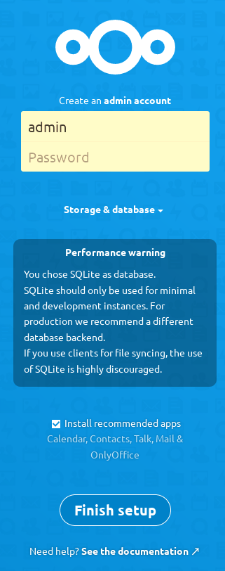
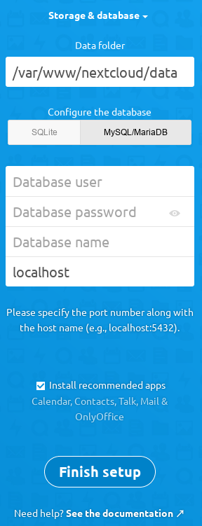

Installationsanleitung
Auch wenn Oracle Linux 8 laut NextCloud Systemvoraussetzungen nicht offiziell unterstützt wird, ist des dennoch möglich, NextCloud auf dieser Linux Distribution zu installieren.
NextCloud arbeitet nach dem LAMP- (Linux, Apache, MySQL, PHP)-Prinzip. Innerhalb dieser Anleitung werden wir Schritt für Schritt die einzelnen Komponenten installieren.
Installation Oracle Linux:Zunächst benötigen wir als Basis ein installiertes Oracle Linux in der Grundinstallation ohne GUI. Ich für meinen Teil werde Oracle Linux in einer VM im VMware Workstation Player installieren. Sollten Sie Hilfe bei der Erstellung einer VM benötigen, hilft ihnen diese Anleitung weiter: Anleitungen VMware Workstation Player
Serverkonfiguration, die ich zu Testzwecken verwendet habe:
Weitere Konfigurationsvorschläge finden Sie unter folgendem Link: Deployment Recommendations
Installation Apachesudo dnf -y install httpd
sudo systemctl enable --now httpd.service
Um zu überprüfen, ob der Service läuft, folgenden Command ausführen:
sudo systemctl status httpd
Anschließend müssen noch die Ports auf der Firewall des Server freigeschaltet werden:
sudo firewall-cmd --permanent --add-service={http,https}
sudo firewall-cmd –-reload
Anschließend per per ifconfig, die IP-Adresse des Servers herausfinden und diese im Browser ihrer Wahl eingeben, um zu verifizieren, dass der Webserver funktionsfähig ist.
 Installation MySQLZunächst muss überprüft werden, welche MySQL-Version verfügbar ist:
sudo dnf module list mysql
Abhängig von dieser, muss sie ausgewählt und installiert werden.
NextCloud empfiehlt und unterstützt aktuell Version 8.0
sudo dnf install -y @mysql:8.0
Die erfolgreiche Installation kann mit folgendem Befehl überprüft werden:
sudo rpm -qi mysql-server
Im nächsten Schritt muss der Dienst aktiviert und gestartet werden:
sudo rpm -qi mysql-server
Um zu überprüfen, ob der Dienst korrekt läuft, wird folgender Befehl abgesetzt:
systemctl status mysqld
Ist der Dienst korrekt gestartet, muss die Installation abgesichter werden
Hierfür wird mit folgendem Befehl ein entsprechendes Programm, zur Absicherung Ihres Servers, gestartet:
sudo mysql_secure_installation
Innerhalb dieses Programmes werden verschiedene Punkte zur Absicherung genannt, versuchen Sie nach Möglichkeit alle Punkte durchzuführen, indem Sie bei den jeweiligen Fragen mit "Y" antworten.
Securing the MySQL server deployment.
Connecting to MySQL using a blank password.
VALIDATE PASSWORD COMPONENT can be used to test passwords
and improve security. It checks the strength of password
and allows the users to set only those passwords which are
secure enough. Would you like to setup VALIDATE PASSWORD component?
Press y|Y for Yes, any other key for No:
y
There are three levels of password validation policy:
LOW Length >= 8
MEDIUM Length >= 8, numeric, mixed case, and special characters
STRONG Length >= 8, numeric, mixed case, special characters and dictionary file
Please enter 0 = LOW, 1 = MEDIUM and 2 = STRONG:
Please set the password for root here.
New password: XYZ
Re-enter new password: XYZ
Estimated strength of the password: 100
Do you wish to continue with the password provided?
(Press y|Y for Yes, any other key for No) :
y
By default, a MySQL installation has an anonymous user,
allowing anyone to log into MySQL without having to have
a user account created for them. This is intended only for
testing, and to make the installation go a bit smoother.
You should remove them before moving into a production
environment.
Remove anonymous users? (Press y|Y for Yes, any other key for No) :
y
Success.
Normally, root should only be allowed to connect from
'localhost'. This ensures that someone cannot guess at
the root password from the network.
Disallow root login remotely? (Press y|Y for Yes, any other key for No) :
y
Success.
By default, MySQL comes with a database named 'test' that
anyone can access. This is also intended only for testing,
and should be removed before moving into a production
environment.
Remove test database and access to it? (Press y|Y for Yes, any other key for No) :
y
- Dropping test database...
Success.
- Removing privileges on test database...
Success.
Reloading the privilege tables will ensure that all changes
made so far will take effect immediately.
Reload privilege tables now? (Press y|Y for Yes, any other key for No) :
y
Success.
All done!
Nach abschluss der initialen Konfiguration der DB, müssen wir nun eine Datenbank für NextCloud erstellen,
einen neuen Nutzer mit dem Benutzernamen "nextcloud" sowie einem zugehörigen Passwort anlegen und diesen Benutzer auf die neuerstellte Datenbank berechtigen:
sudo mysql -u root -pPHP installieren
mysql> create database nextcloud;
mysql> create user 'nextcloud'@'localhost' identified by 'PASSWORD';
mysql> grant all privileges on nextcloud.* to 'nextcloud'@'localhost';
mysql> flush privileges;
mysql> quit
Zur Installation der aktuellen PHP-Version benötigen Wir sowohl das EPEL, als auch das Remi Repository.
Diese kann man folgendermaßen hinzufügen:
sudo dnf install https://dl.fedoraproject.org/pub/epel/epel-release-latest-8.noarch.rpm
sudo dnf install https://rpms.remirepo.net/enterprise/remi-release-8.rpm
Ist das getan, können mit folgendem Befehl alle verfügbaren PHP-Versionen angezeigt werden:
sudo dnf module list php
Und mit folgedem Befehl die aktuell unterstützte PHP-Version festgelegt werden:
sudo dnf module enable php:remi-8.0 -y
Genaue Informationen zu unterstützten Versionen finden Sie unter folgendem Link: Systemvoraussetzungen
Dann müssen alle benötigen Module installiert werden:
sudo dnf install -y php php-fpm php-mysqlnd php-opcache php-gd php-xml php-mbstring php-common php-json php-zip
Im Anschluss wird php-fpm aktiviert und gestartet, sowie der Apache-Dienst neu gestartet:
sudo systemctl start php-fpm.service
sudo systemctl enable php-fpm.service
sudo systemctl restart httpd
Alle Vorbereitungen für die NextCloud-Installation wurden nun abgeschlossen, im nächsten Schritt findet die eigentliche Installation des Dienstes statt
Zunächst muss die aktuelle Version folgendermaßen heruntergeladen werden:
wget https://download.nextcloud.com/server/releases/latest-23.zip
Die heruntergeladene Datei, muss im nächsten Schritt deinstalliert werden, hierfür wird unzip benötigt:
sudo dnf -y install unzip
unzip latest-23.zip
Die entpackten Dateien müssen im nächsten Schritt in das root Verzeichnis des Apache-Dienstes kopiert werden:
sudo mv nextcloud /var/www/html
Zusätzlich muss sollte ein Verzeichnis zum Speichern von Nutzerdaten angelegt werden:
sudo mkdir /var/www/html/nextcloud/data
Des Weiteren muss der Apache-Benutzer Owner dieses Verzeichnisses werden:
sudo chown -R apache:apache /var/www/html/nextcloud/
Abschließend müssen weitere Berechtigungen gesetzt werden, damit Nextcloud in der Lage ist, Daten in die angegebenen Ordner zu schreiben:
semanage fcontext -a -t httpd_sys_rw_content_t '/var/www/html/nextcloud/data(/.*)?'
semanage fcontext -a -t httpd_sys_rw_content_t '/var/www/html/nextcloud/config(/.*)?'
semanage fcontext -a -t httpd_sys_rw_content_t '/var/www/html/nextcloud/apps(/.*)?'
semanage fcontext -a -t httpd_sys_rw_content_t '/var/www/html/nextcloud/.htaccess'
semanage fcontext -a -t httpd_sys_rw_content_t '/var/www/html/nextcloud/.user.ini'
semanage fcontext -a -t httpd_sys_rw_content_t '/var/www/html/nextcloud/3rdparty(/.*)?'
restorecon -Rv '/var/www/html/nextcloud/'
Nach abgeschlossener Installation ist NexCloud nun über http://SERVER-IP/nextcloud erreichbar und kann von hier aus weiter eingerichtet werden.
Hier zunächst ein Benutzername + Passwort für den Admin-Account festlegen:
Anschließend das Drop-Down-Menü "Speicher & Datenbank" bzw. "Storage & Database" öffnen.
Unter "Datenverzeichnis" soll unser zuvor erstellter Benutzerdaten-Ordner ausgewählt werden --> /var/www/html/nextcloud/data
Im Anschluss die Verbindung zu unserer zuvor erstellten Datenbank "nextcloud" mit dem Benuter "nextcloud" sowie dem zugehörigen Passwort herzustellen. Ansonsten würde NextCloud die interne SQLite DB nutzen, welche in jedem Fall nur für Testinstallationen gedacht ist.
Zum Abschluss der Konfiguration auf "Installieren" klicken. Die Fertigstellung der Konfiguration startet und kann ein paar Minuten dauern.
Abschließend können Sie noch empfohlenen Apps installieren, diese können jedoch nach Bedarf im Nachhinein nachinstalliert werden.
Offene Punkte zu Sicherheit angucken (Zertifikat, schöne URL etc.) https://techguides.yt/guides/how-to-install-and-configure-nextcloud-hub-21/ Quellen